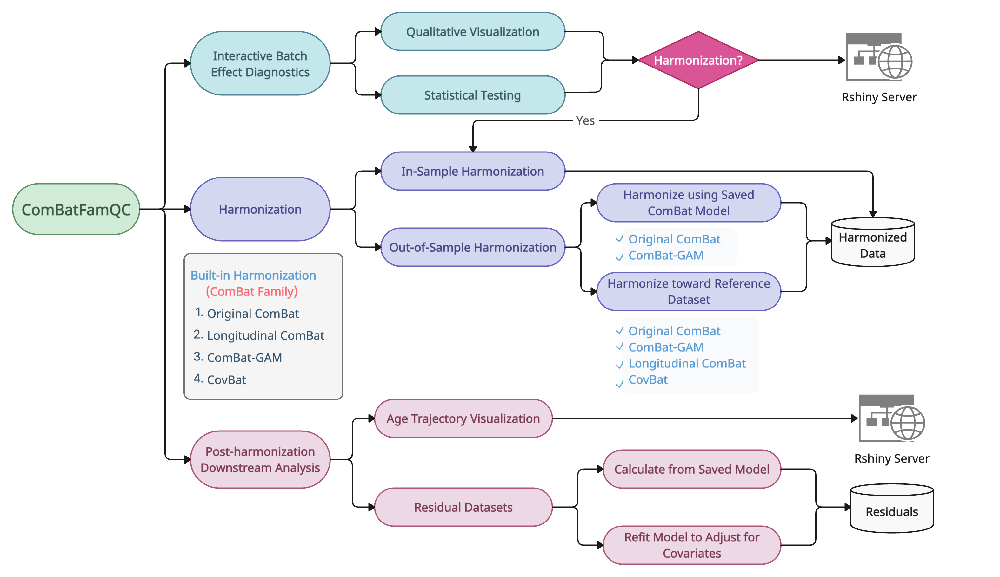

ComBatFamQC
ComBatFamQC is an R package that integrates batch effect diagnostics, data harmonization, and post-harmonization analysis for multi-site studies.
It combines interactive visualization and statistical testing to help users detect unwanted site effects, harmonize data across scanners or batches, and analyze results in a single, integrated workflow.

Key Features
ComBatFamQC integrates several powerful tools that guide users through the complete harmonization process, from detecting batch effects to generating harmonized and analysis-ready data.
Built-in Harmonization
- Provides four harmonization methods:
ComBat, Longitudinal ComBat, ComBat-GAM, and CovBat
- Preserves important covariates such as age, sex, and diagnosis
- Produces harmonized data that are directly comparable across sites
Batch Effect Diagnostics
- Identify and measure batch effects through interactive visualizations and statistical tests
- Evaluate harmonization quality and detect remaining site-related variation
Post-Harmonization Analysis
- Visualize life-span age trends across brain regions
- Generate covariate-corrected residuals for downstream statistical or machine learning analyses
Usage Options
ComBatFamQC offers two user-friendly ways to fit different analysis needs:
- R Shiny interface for interactive exploration and visualization
- Command-line tools for automated and large-scale processing:
CombatQC_CLI.Rfor diagnostics and harmonization
post_CLI.Rfor post-harmonization visualization and residual generation
Learn More
- Visit Get Started for installation, command-line usage, and vignette access.